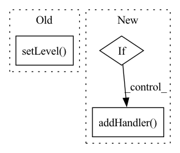

Pattern ID :41643
Before Change
root_logger = logging.getLogger()
root_logger.addHandler(stream_handler)
root_logger.addHandler(file_handler)
root_logger.setLevel( level)
After Change
stream_handler.setFormatter(formatter)
logging.root.addHandler(stream_handler)
if log_file:
file_handler = logging.FileHandler(filename=log_file)
file_handler.setFormatter(formatter)
logging.root.addHandler( file_handler)
In pattern: SUPERPATTERN
Frequency: 3
Non-data size: 3
Instances Fragment ID: 116933145
Project Name: mlfoundations/open_clip
Commit Name: 44a0dc60cc75034893c25664b4d03d8e7e887d97
Time: 2022-01-17
Author: rwightman@gmail.com
File Name: src/training/logger.py
M Class Name: AnonimousClass
N Class Name: AnonimousClass
M Method Name: setup_logging(3)
N Method Name: setup_logging(2)
M Parent Class:
N Parent Class:
M File Name: src/training/logger.py
N File Name: src/training/logger.py
M Start Line: 5
M End Line: 20
N Start Line: 4
N End Line: 25
Before Change
self.time_buf = {}
self.formatter = logging.Formatter("%(asctime)s %(filename)s %(funcName)s [line:%(lineno)d] %(levelname)s %(message)s")
self.head = logging.StreamHandler()
self.head.setLevel( logging.INFO)
self.head.setFormatter(self.formatter)
self.addHandler(self.head)
def check_if_log(self, round, eval_interval=-1):After Change
self.streamhandler.setFormatter(self.formatter)
self.streamhandler.setLevel(self._LEVEL[self.meta["log_level"].upper()])
self.addHandler(self.streamhandler)
if self.meta["log_file"]:
log_dir = self.get_log_path()
self.log_path = os.path.join(log_dir, self.get_time_string()+self.get_output_name(".log"))
if not os.path.exists(self.get_log_path()):
os.mkdir(log_dir)
self.filehandler = logging.FileHandler(self.log_path)
self.filehandler.setFormatter(self.formatter)
self.filehandler.setLevel(self._LEVEL[self.meta["log_level"].upper()])
self.addHandler( self.filehandler)
def check_if_log(self, round, eval_interval=-1):
For evaluating every "eval_interval" rounds, check whether to log at "round". Fragment ID: 116933147
Project Name: wwzzz/easyfl
Commit Name: 45505e44ba6f50c9df0453fd543b7dfe0891d0e9
Time: 2022-07-29
Author: zzz510711928@gmail.com
File Name: utils/logger/basic_logger.py
M Class Name: Logger
N Class Name: Logger
M Method Name: __init__(2)
N Method Name: __init__(1)
M Parent Class: logging.Logger
N Parent Class: logging.Logger
M File Name: utils/logger/basic_logger.py
N File Name: utils/logger/basic_logger.py
M Start Line: 16
M End Line: 19
N Start Line: 22
N End Line: 48
Before Change
"-%(lineno)d-%(process)d: %(message)s")
datefmt = "%a %d %b %Y %H:%M:%S"
formatter = logging.Formatter(fmt, datefmt)
self._logger.setLevel( level)
log_path = os.path.join(output_dir, log_filename)
file_handler = logging.FileHandler(log_path)
file_handler.setLevel(logging.INFO)After Change
stream_handler = logging.StreamHandler(sys.stdout)
stream_handler.setFormatter(formatter)
if not self.logger.handlers and log_path is not None:
fh = logging.FileHandler(log_path)
fh.setLevel(logging.INFO)
fh.setFormatter(formatter)
self.logger.addHandler( fh)
self.logger.addHandler(stream_handler)
self.debug = self.logger.debug
self.info = self.logger.info Fragment ID: 116933148
Project Name: spico197/rex
Commit Name: 6c064639242c6f66893a4319081b7339ff6a43da
Time: 2021-05-06
Author: spico1026@gmail.com
File Name: rex/utils/logger.py
M Class Name: Logger
N Class Name: Logger
M Method Name: __init__(4)
N Method Name: __init__(5)
M Parent Class: object
N Parent Class: object
M File Name: rex/utils/logger.py
N File Name: rex/utils/logger.py
M Start Line: 9
M End Line: 37
N Start Line: 7
N End Line: 34